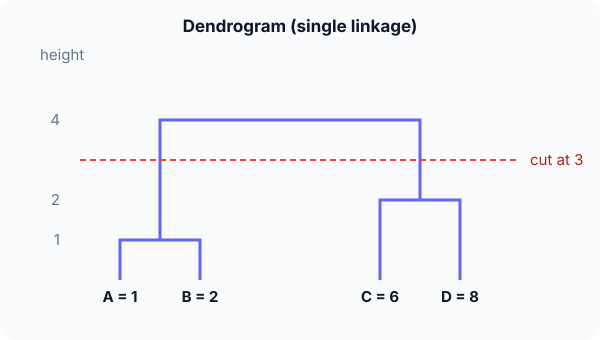

Prerequisites
- k-means, for comparison.
- Distances between points.
- Binary trees: a dendrogram is one.
The analogy
Everyday analogy
Think of building a family tree from the bottom up: siblings are joined first, then cousins, then whole branches, until everyone is in one family.
Agglomerative clustering joins the two closest groups at every step, and the height of each join records how far apart they were.
How it works
Linkage: the distance between two clusters must be defined: single linkage uses the closest pair of members, complete the farthest pair, average the mean of all pairs.
Start with the merges by hand
Points A = 1, B = 2, C = 6, D = 8, single linkage. Predict, then open "Check".
Example: predict before you read
Step 1. Which pair merges first, and at what height?
Check
A and B, at distance 1 (the smallest of all pairwise distances).
Step 2. Cover the next line and guess: the next merge.
Check
C and D at distance 2. ({A, B} to C is 4, so it waits.)
Step 3. Final merge: predict the single-linkage distance between {A, B} and {C, D}.
Check
The closest members are B = 2 and C = 6: distance 4. Everything is now one cluster.

Quick recall: Before reading further, cover the text above and say out loud: what does the height of a join in a dendrogram mean?
Check your answer
The distance between the two clusters when they were merged.
Finish the picture: a different linkage
Same points, complete linkage (farthest pair).
- The first two merges. Predict them.
Check
Still A–B at 1 and C–D at 2: for single points, all linkages agree.
- The final merge height. Predict it.
Check
The farthest members are A = 1 and D = 8: height 7 instead of 4. Complete linkage gives tighter, rounder clusters; single linkage can chain long thin groups.
Quick recall: Without scrolling up, say out loud: how many clusters do you get by cutting at height 3, and at height 1.5?
Check your answer
At 3: two clusters, {A, B} and {C, D}. At 1.5: three clusters, {A, B}, {C}, {D}.
Full worked calculation
Four points on a line, A = 0, B = 1, C = 5, D = 7, clustered bottom-up twice: once with single linkage (closest pair) and once with complete linkage (farthest pair). Every distance-matrix update is shown.
| A (0) | B (1) | C (5) | D (7) | |
|---|---|---|---|---|
| A | 0 | 1 | 5 | 7 |
| B | 1 | 0 | 4 | 6 |
| C | 5 | 4 | 0 | 2 |
| D | 7 | 6 | 2 | 0 |
-
1Start: every point is its own cluster
$$\{A\}, \{B\}, \{C\}, \{D\} \qquad \text{smallest distance: } d(A, B) = 1$$The distance matrix above holds all $\binom{4}{2} = 6$ pairwise distances. Agglomerative clustering always merges the two closest clusters first, here A and B.
-
2Single linkage: update the matrix
$$d(\{AB\}, C) = \min(5, 4) = 4, \qquad d(\{AB\}, D) = \min(7, 6) = 6, \qquad d(C, D) = 2$$With single linkage, the distance between two clusters is the distance between their closest members. The row for A and the row for B collapse into one row by taking the minimum.
-
3Single linkage: second merge
$$\min(4, 6, 2) = 2 \;\Rightarrow\; \text{merge } C \text{ and } D \text{ at height } 2$$The smallest entry is now C–D. We record the height (2) at which they join: it becomes the height of that branch in the dendrogram.
-
4Single linkage: last merge
$$d(\{AB\}, \{CD\}) = \min(4, 6, 5, 7) = 4 \;\Rightarrow\; \text{merge at height } 4$$Only two clusters remain, so they merge. The dendrogram heights are 1, 2, 4.
-
5Complete linkage: same start, different update
$$d(\{AB\}, C) = \max(5, 4) = 5, \qquad d(\{AB\}, D) = \max(7, 6) = 7$$Complete linkage uses the farthest members, so the merged row takes the maximum. The first two merges (AB at 1, CD at 2) are the same as before.
-
6Complete linkage: last merge
$$d(\{AB\}, \{CD\}) = \max(4, 6, 5, 7) = 7 \;\Rightarrow\; \text{merge at height } 7$$The final merge happens much higher (7 instead of 4) because complete linkage measures the full width of the combined cluster: from A at 0 to D at 7.
-
7Cut the dendrogram
$$\text{cut at height } 3: \; \{A, B\}, \{C, D\} \qquad \text{cut at height } 1.5: \; \{A, B\}, \{C\}, \{D\}$$You choose the number of clusters after the fact by drawing a horizontal line through the tree. A big gap between merge heights (2 to 7 here) signals a natural number of clusters, 2.
What the numbers tell us
Both linkages find the same two groups, {A, B} and {C, D}, but disagree on how far apart they are: 4 (single) vs 7 (complete).
Single linkage can chain far-apart points together through intermediates; complete linkage prefers compact, round clusters. The dendrogram lets you pick the number of clusters by eye.
The rule in plain words
Start with every point as its own cluster. Repeatedly merge the two clusters with the smallest linkage distance, recording the merge height, until one cluster is left.
Cut the dendrogram at a chosen height (or where the gap between merges is largest) to get the clusters.
Quick recall: Before you read the code, describe single-linkage distance between two clusters, in your own words. Then check below.
Check your answer
Look at every pair with one member in each cluster and take the smallest distance among them.
The code
Read this code after you have done the merges by hand. It will make more sense.
double single_link(double a[], int na, double b[], int nb) { /* closest pair */
double best = INFINITY;
for (int i = 0; i < na; i++)
for (int j = 0; j < nb; j++)
if (fabs(a[i] - b[j]) < best) best = fabs(a[i] - b[j]);
return best;
}
double complete_link(double a[], int na, double b[], int nb) { /* farthest pair */
double worst = 0;
for (int i = 0; i < na; i++)
for (int j = 0; j < nb; j++)
if (fabs(a[i] - b[j]) > worst) worst = fabs(a[i] - b[j]);
return worst;
}Definition
What you just did, in one line: agglomerative hierarchical clustering starts with every point alone and repeatedly merges the two closest clusters, producing a dendrogram that can be cut at any height.
flowchart TD
A["each point is its own cluster"] --> B["compute linkage distances between clusters"]
B --> C["merge the closest two, record the height"]
C --> D{"only one cluster left?"}
D -->|no| B
D -->|yes| E["cut the dendrogram to get k clusters"]
How costly is it?
Quick recall: Before looking at the formula, predict: how many merges does agglomerative clustering perform on $n$ points?
Check your answer
$n - 1$: each merge reduces the number of clusters by one, from $n$ to 1.
The two most common linkages between clusters $P$ and $Q$:
$$d_{\text{single}}(P, Q) = \min_{p \in P,\, q \in Q} d(p, q), \qquad d_{\text{complete}}(P, Q) = \max_{p \in P,\, q \in Q} d(p, q)$$| Phase | Cost | Why |
|---|---|---|
| Distance matrix | $O(n^2)$ memory | All pairs of points |
| Naive algorithm | $O(n^3)$ time | $n - 1$ merges, each scanning all pairs |
| Optimised (e.g. single linkage) | $O(n^2)$ time | Special algorithms such as SLINK |
Best for: small to medium datasets where you want to see the structure at every scale, such as gene expression or taxonomies.
- Pro: No need to choose $k$ in advance; the dendrogram shows all levels.
- Pro: Works with any distance measure and gives an interpretable tree.
- Con: $O(n^2)$ memory and $O(n^2)$–$O(n^3)$ time: too slow for very large datasets.
- Con: Merges are never undone, so an early bad merge stays; results depend on the linkage.
Warning
Single linkage can "chain": two clearly separate groups connected by a thin trail of points get merged early. Complete or Ward linkage avoids this, at the cost of preferring round clusters.
Exam tip
Exams give a distance matrix and ask for the dendrogram. After each merge, update the matrix: for single linkage, the new cluster's distance to $X$ is the minimum of the two old distances.
Common mistakes
- Mixing up single (minimum) and complete (maximum) linkage.
- Forgetting to update the distance matrix after each merge.
- Reading the horizontal order of leaves as meaningful; only the heights matter.
Try it yourself
Exercise 1 (warm-up)
Points 0, 3, 4, 10, single linkage. List the merges and their heights.
Hint
Find the smallest gap first.
Answer
3–4 at 1; then 0 with {3, 4} at 3; then 10 with {0, 3, 4} at 6.
Exercise 2 (a bit harder)
Same points 0, 3, 4, 10, complete linkage. List the merges and heights, and compare. Write your answer down before you open it.
Show answer
3–4 at 1; then 0 with {3, 4} at max(3, 4) = 4; then 10 with {0, 3, 4} at 10. Same order here, but complete linkage gives larger heights.
Did you know?
Did you know?
Biologists have drawn trees of species by hierarchical clustering of similarities since the 1950s; phylogenetic methods like UPGMA are average-linkage clustering.
Ward's method, the default in many tools, merges the pair that increases the within-cluster sum of squares the least, the same quantity k-means minimises.
Key points to remember
If you remember one thing from each line, remember the because.
- No $k$ is needed upfront because the dendrogram contains every number of clusters at once.
- Merge heights show strength of grouping because they record the distance at which clusters joined.
- It needs $n - 1$ merges because each merge reduces the number of clusters by one.
- Linkage changes the result because it defines what "closest clusters" means.
- It scales poorly because it needs distances between all pairs of points.
Self-check questions
Answer these in order, out loud. They follow the page, so your answers become the script of your video.
- How is hierarchical clustering like building a family tree from the bottom up?
Sample answer
The closest relatives are joined first, then larger branches, until everyone is in one family, and the tree records the order.
- Do single-linkage clustering on A = 1, B = 2, C = 6, D = 8.
Sample answer
Merge A–B at 1, C–D at 2, then the two groups at 4 (closest members B and C).
- Why does
single_linkstartbestatINFINITY?A good answer says what the first comparison does.
Sample answer
So the first pair's distance is always smaller and becomes the starting minimum; any finite start could be smaller than every real distance.
- So what is agglomerative hierarchical clustering, in one sentence?
Sample answer
A method that repeatedly merges the two closest clusters, starting from single points, and records the merges as a dendrogram.
- Why does the final merge height differ between single and complete linkage?
A good answer uses the A, B, C, D numbers.
Sample answer
Single linkage uses the closest members, B and C, distance 4; complete linkage uses the farthest, A and D, distance 7.
- What does hierarchical clustering cost?
Sample answer
$O(n^2)$ memory for distances and $O(n^2)$ to $O(n^3)$ time depending on the algorithm.
- Give two pros and two cons.
Sample answer
Pros: no need to pick $k$, and an interpretable dendrogram with any distance. Cons: slow and memory-hungry on large data, and merges can't be undone.
- If you had to teach this to a friend in 2 minutes, what would you leave out, and why?
Sample answer
I'd leave out the complexity and Ward's method. I'd keep the family-tree analogy, the four-point merges, the dendrogram cut, and "merge the closest, cut where you like".
External resources
- scikit-learn: Hierarchical clustering: linkages and dendrogram examples.
- Wikipedia: Hierarchical clustering: linkage criteria and complexity.
- SciPy: dendrogram: drawing dendrograms in Python.
Videos
- YouTube search: StatQuest hierarchical clustering: StatQuest with a heatmap example.